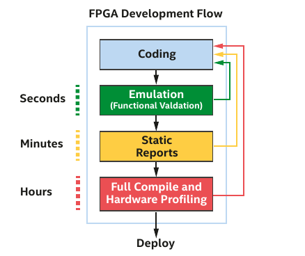
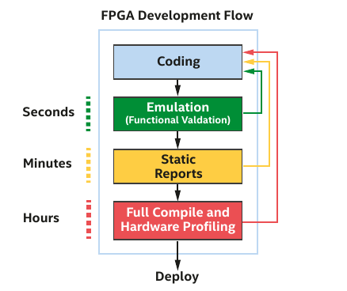

Compiling SYCL programs for Intel® FPGA cards¶
Setup¶
After connecting to one of Meluxina's login node, please clone first the oneAPI-sample repository with the git clone --depth 1 https://github.com/oneapi-src/oneAPI-samples.git in your home folder.
FPGA support was removed from the Intel® oneAPI Toolkits starting 2025.1
Altera, originally a chipmaker acquired by Intel in 2015, was spun out as an independent company in February 2024. Now led by Sandra Rivera, it focuses on reconfigurable FPGA chips for data center, cloud , industrial, and automotive applications.
As a consequence, if you want to use oneAPI 2025.1 examples, you will need to clone https://github.com/altera-fpga/hls-samples.
Once the repository cloned, you should see the following hierarchy:
tree -d -L 2 oneAPI-samples
oneAPI-samples
├── AI-and-Analytics
│ ├── End-to-end-Workloads
│ ├── Features-and-Functionality
│ ├── Getting-Started-Samples
│ ├── images
│ └── Jupyter
├── common
│ └── stb
├── DirectProgramming
│ ├── C++
│ ├── C++SYCL
│ ├── C++SYCL_FPGA
│ └── Fortran
├── Libraries
│ ├── oneCCL
│ ├── oneDAL
│ ├── oneDNN
│ ├── oneDPL
│ ├── oneMKL
│ └── oneTBB
├── Publications
│ ├── DPC++
│ └── GPU-Opt-Guide
├── RenderingToolkit
│ ├── GettingStarted
│ └── Tutorial
├── Templates
│ └── cmake
└── Tools
├── Advisor
├── ApplicationDebugger
├── Benchmarks
├── GPU-Occupancy-Calculator
├── Migration
└── VTuneProfiler
- As you can see Intel provides numerous code samples and examples to help your grasping the power of the oneAPI toolkit.
- We are going to focus on
DirectProgramming/C++SYCL_FPGA. -
Create a symbolic at the root of your home directory pointing to this folder:
ln -s oneAPI-samples/DirectProgramming/C++SYCL_FPGA/Tutorials/GettingStarted tree -d -L 2 GettingStarted GettingStarted ├── fast_recompile │ ├── assets │ └── src ├── fpga_compile │ ├── part1_cpp │ ├── part2_dpcpp_functor_usm │ ├── part3_dpcpp_lambda_usm │ └── part4_dpcpp_lambda_buffers └── fpga_template └── src -
The fpga_compile folder provides basic examples to start compiling SYCL C++ code with the DPC++ compiler
-
The fpga_recompile folder show you how to recompile quickly your code without having to rebuild the FPGA image
-
The fpga_template is a starting template project that you can use to bootstrap a project
Discovering devices¶
Before targeting a specific hardware accelerator, you need to ensure that the SYCL runtime is able to detect it.
Commands
Output
[opencl:acc:0] Intel(R) FPGA Emulation Platform for OpenCL(TM), Intel(R) FPGA Emulation Device 1.2 [2023.15.3.0.20_160000]
[opencl:cpu:1] Intel(R) OpenCL, AMD EPYC 7452 32-Core Processor 3.0 [2023.15.3.0.20_160000]
[opencl:acc:2] Intel(R) FPGA SDK for OpenCL(TM), p520_hpc_m210h_g3x16 : BittWare Stratix 10 MX OpenCL platform (aclbitt_s10mx_pcie0) 1.0 [2023.1]
[opencl:acc:3] Intel(R) FPGA SDK for OpenCL(TM), p520_hpc_m210h_g3x16 : BittWare Stratix 10 MX OpenCL platform (aclbitt_s10mx_pcie1) 1.0 [2023.1]
Note
Note that you can use FPGA emulation on a non-FPGA node !!!
First code¶
GettingStarted/fpga_compile/part4_dpcpp_lambda_buffers/src/vector_add.cpp
1 2 3 4 5 6 7 8 9 10 11 12 13 14 15 16 17 18 19 20 21 22 23 24 25 26 27 28 29 30 31 32 33 34 35 36 37 38 39 40 41 42 43 44 45 46 47 48 49 50 51 52 53 54 55 56 57 58 59 60 61 62 63 64 65 66 67 68 69 70 71 72 73 74 75 76 77 78 79 80 81 82 83 84 85 86 87 88 89 90 91 92 93 94 95 96 97 98 99 100 101 102 103 104 105 106 107 108 109 | |
-
The
vector_add.cppsource file contains all the necessary to understand how to create a SYCL program -
lines 4 and 5 are the minimal headers to include in your SYCL program
-
line 9 is a forward declaration of the kernel name
-
lines 11-19 is a function representing our kernel. Note the absence of
__kernel,__globalas it exists in OpenCL -
lines 30-36 are pragmas defining whether you want a full compilation, a CPU emulation or the simulator
-
line 39 is the queue creation. The queue is bounded to a device. We will discuss it later in details.
-
lines 41-46 provides debugging information at runtime.
-
lines 48-54 instantiates 3 vectors.
vec_aandvec_bare input C++ arrays and are initialized inside the next loop.vec_cis an output C++ array collecting computation results betweenvec_aandvec_b. -
lines 60-62 create buffers for each vector and specify their size. The runtime copies the data to the FPGA global memory when the kernel starts
-
line 64 submits a command group to the device queue
-
lines 66-68 relies on accessors to infer data dependencies. "read_only" accessors have to wait for data to be fetched. "no_init" option indicates to the runtime know that the previous contents of the buffer can be discarded
-
lines 70-73 starts a single tasks (single work-item) and call the kernel function
-
lines 99-105 catch SYCL exceptions and terminate the execution
Code synthesis¶
 

-
Hardware synthesis can be very long
-
Emulation is a practical way of testing your kernels
Emulation¶
-
FPGA emulation refers to the process of using a software or hardware system to mimic the behaviour of an FPGA device. This is usually done to test, validate, and debug FPGA designs before deploying them on actual hardware. The Intel® FPGA emulator runs the code on the host cpu.
-
Emulation is crucial to validate the functionality of your kernel design.
-
During emulation, your are not seeking for performance.
Compile for emulation (in one step)
Intel uses the SYCL Ahead-of-time (AoT) compilation which as two steps:
-
The "compile" stage compiles the device code to an intermediate representation (SPIR-V).
-
The "link" stage invokes the compiler's FPGA backend before linking.
Two-steps compilation
- The compiler option
-qactypesinforms the compiler to search and include the Algorithmic C (AC) data type folder for header and libs to the AC data types libraries for Field Programmable Gate Array (FPGA) and CPU compilations. - The Algorithmic C (AC) datatypes libraries include a numerical set of datatypes and an interface datatype for modelling channels in communicating processes in C++.
Static reports¶
-
During the process of compiling an FPGA hardware image with the Intel® oneAPI DPC++/C++ Compiler, various checkpoints are provided at different compilation steps. These steps include object files generation, an FPGA early image object generation, an FPGA image object generation, and finally executables generation. These checkpoints offer the ability to review errors and make modifications to the source code without needing to do a full compilation every time.
-
When you reach the FPGA early image object checkpoint, you can examine the optimization report generated by the compiler.
-
Upon arriving at the FPGA image object checkpoint, the compiler produces a finished FPGA image.
In order to generate the FPGA early image, you will need to add the following option:
-
-Xshardware -
-Xstarget=<target>or-Xsboard=<board> -
-fsycl-link=early
Compile for FPGA early image
-
The
vector_add_report.ais not what we target in priority. We target the reports directoryvector_add_report.prjwhich has been created. -
You can evaluate whether the estimated kernel performance data is satisfactory by going to the
/reports/ directory and examining one of the following files related to your application: -
report.html: This file can be viewed using Internet browsers of your choice
.zip: Utilize the Intel® oneAPI FPGA Reports tool,i.e., fpga_report
Full compilation¶
This phase produces the actual FPGA bitstream, i.e., a file containing the programming data associated with your FPGA chip. This file requires the target FPGA platform to be generated and executed. For FPGA programming, the Intel® oneAPI toolkit requires the Intel® Quartus® Prime software to generate this bitstream.
Full hardware compilation
-
The compilation will take several hours. Therefore, we strongly advise you to verify your code through emulation first.
-
You can also use the
-Xsfast-compileoption which offers a faster compile time but reduce the performance of the final FPGA image.
Fast recompilation¶
-
At first glance having a single source file is not necessarily a good idea when host and device compilation differs so much
-
However, there is two different strategies to deal with it:
-
Use a single source file and add the
-reuse-exe -
Separate host and device code compilation in your FPGA project
-
This is up to you to choose the method that suits you the most
Using the -reuse-exe option
icpx -fsycl -fintelfpga -qactypes -Xshardware -Xsboard=p520_hpc_m210h_g3x16 -DFPGA_HARDWARE -reuse-exe=vector_add.fpga vector_add.cpp -o vector_add.fpga
-reuse-exe=image flag to icpx instructs the compiler to extract the compiled FPGA binary from the existing executable and package it into the new executable, saving the device compilation time.
Question
- What happens if the vector_add.fpga is missing ?
Separating host and device code
Go to the GettingStarted/fpga_recompile folder. It provides an example of separate host and device code
The process is similar as the compilation process for OpenCL except that a single tool is used, i.e., icpx
- Compile the host code:
- Compile the FPGA image:
- Link both: